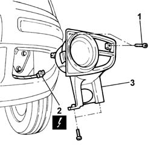
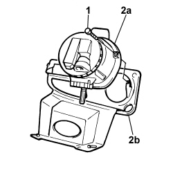

5540D10 L/H OR R/H FOG LAMP (ONE) - R+R
- Path
- Procedures > 55 ELECTRICAL EQUIPMENT > 5540 EXTERIOR LIGHTING > 5540D FOG LAMPS > 5540D10 L/H OR R/H FOG LAMP (ONE) - R+R
- Kind
- repair procedure (removal / refitting; the operation number is the code)
- Applies to
- all engines; all production periods
- Interactive page
- https://sloeber94.github.io/elrnDB-fPnd/en/#/2752979
Applies to: all engines; all production periods
 Removing
Removing
 Refitting
RefittingDisconnect the negative battery terminal.
1. Undo the retaining bolts.
Remove the panel complete with foglamp.
2. Disconnect the electrical connection for the fog light.
Description | Connector | |
|---|---|---|
2 | Left fog lamp | F15 |
Description | Connector | |
|---|---|---|
2 | Right fog lamp | F16 |
3. Remove the panel complete with foglamp.

Applies to: all engines; all production periods
1. Undo the retaining bolts.
2. Separate the foglamp (2a) from the trim (2b).

Applies to: all engines; all production periods
Refitting
RemovingPlace the fog light in its housing on the panel and tighten the fixing bolts.
Connect the electrical connection for the fog light.
Description | Connector | |
|---|---|---|
- | Left fog lamp | F15 |
Description | Connector | |
|---|---|---|
- | Right fog lamp | F16 |
Place the panel with fog light in its housing on the bumper and tighten the fixing bolts.
Connect the negative battery terminal.